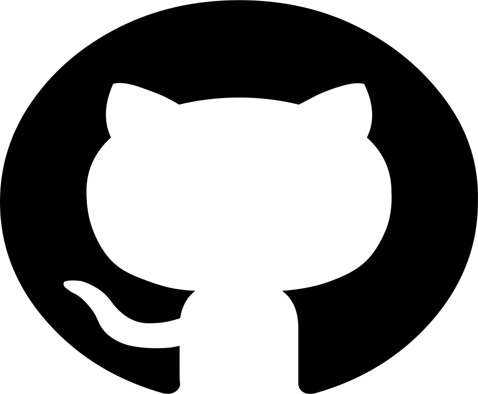

Привет! Вы находитесь на персональной странице PAX29. Этот сайт создан как "сайт-визитка" в процессе обучения на курсе Front-end разработчик skillfactory.ru. Дальше идёт рассказ обо мне. Мои специализации:
Инженерное
С детства увлекался ломанием и починкой вещей. Сначала получалось только ломать, потом стало получаться чинить и даже создавать. Вдохновением для меня стали гидроманипуляторы советских мусоровозов, механика настольных часов, приземление "Бурана", фильм "Назад в будущее" и книги Жуля Верна. После окончания школы я обучался на морского инженера и работаю в море. Моя основная работа связана с электрооборудованием. Всё, начиная от электростанции с дизель-генераторами и заканчивая печатными платами и программным обеспечением на них представляет интерес для меня. В настоящее время я работаю электромехаником в команде судна геотехнического бурения.
Музыка
Обожаю слушать и создавать музыку. Мне нравятся различные направления. Электроника, джаз, классика. Вдохновением в творчестве для меня были и являются Пётр Чайковский, Эдуард Артемьев, Depeche Mode, Chemical Brothers, Underworld, Duke Ellington, Miles Davis, John Coltrain и другие. Так как я уже освоил HTML тэги, я могу вставлять аудио на страницу и сейчас играет один из моих треков. Он создан с использованием сэмплов и скретчей с пластинки группы Parliament. Если есть желание послушать, прибавьте громкость ниже.
Кино
Люблю смотреть кино. Нравится много что, от Тарковского до боевиков с Вандамом из 90-х. На работе создал "Moviehub" - Медиа сервер Jellyfin подгружает субтитры и информацию о видео-файлах из интернета и создает в локальной сети веб-каталог наподобие Кинопоиска или тех что встречаются в самолётах. Медиа сервер установлен в docker-контейнере на ОС OpenMediaVault. Вишенка на торте - клиентские приложения Jellyfin для разных ОС.
Спорт
Летом люблю кататься на велике, а зимой на горных лыжах.
Как я становился разработчиком
Я не представляю свою жизнь без компьютера. Первый компьютер "Ассистент" у меня появился в 1991 году. В нем был встроенный интерпретатор Бейсик, в качестве запоминающего устройства использовался магнитофон с кассетами. Загрузку небольшой игры нужно было ждать несколько минут. На нём я изучал Бейсик. Позже, в школе я пробовал программировать на visual basic. Еще я изучал python. Сейчас изучаю HTML и CSS. Чувствую что мне интересно этим заниматься, хочу чтобы программирование стало как минимум моей второй профессией.
На каких языках я программировал:
- Basic
- Visual Basic
- C/C++ (Arduino IDE)
- Python
- HTML/CSS
Контакты
 ivanpanin@mailbox.org ,
публичный_ключ
ivanpanin@mailbox.org ,
публичный_ключ
 pax29